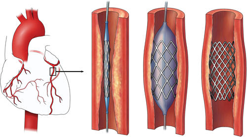

你好，欢迎来到《医学通识50讲》，我是薄世宁。
咱们今天讲讲冠心病。
冠心病是最常见的，也是死亡率最高的病之一。
你肯定知道，冠心病是因为血管窄了、堵了，引起心绞痛和心肌梗死。这几乎就是个常识。
但是，为什么有些冠心病的病人容易脑血管也出问题呢？
为什么有些男病人容易出现性功能障碍呢？
冠心病真的就是大多数人理解的，只是局部血管出问题了吗？
人体的血管就像城市的交通。为了理解冠心病，咱们可以从交通说起。
冠心病反映全身血管问题
就拿北京来说，在上个世纪90年代，北京最堵的地方在西直门。
为啥呢？
首先，西直门是西二环和北二环的交会点，是从城区通往西北部的必经之处，车多流量大。
其次，老西直门桥是70年代修建的，已经不够用了，所以它就成了西北二环最拥堵的节点。
那么，打通这个点是不是就好了呢？
90年代，交通部门用了四年时间设计，花了两个多亿重新建造，1999年新立交桥完工，缓解交通的效果立竿见影。
但是，司机们也就痛快了两年。两年后，西直门立交再次成为最堵的点。西北二环到了高峰期，又成了“停车场”。
解决一个点，解决不了整体问题。
回到人体的血管。血管，被称为“生命的粮道”。
如果把全身的血管从动脉到静脉连起来，总长度可以达到17.6万公里，可以绕地球赤道4圈半。
这么长的血管，时刻都在受着血流冲击。
血管内皮就会受损，血液里的脂质就会沉积，就像河道的淤泥一样。时间久了，还会形成斑块，血管就会越来越狭窄。
既然全身的动脉血管里流的血是一样的，引起血管病变的危险因素也是一样的，一旦一个部位出问题了，窄了，那么其他部位的血管，能好到哪儿去呢？
所以，19世纪法国医生卡萨尼斯说过一句话：
意思是血管决定了我们的健康质量和寿命，这句话一点也不为过。
动脉血管出问题了，长斑块，变狭窄，影响血流了。
当供应心脏的动脉血管——冠状动脉长斑块，变狭窄了，如果超过一定程度，就是冠心病。
这些病本质上都是动脉血管出问题了。
就像上下班高峰期，整个交通都不会太通畅，一个桥堵只是其中的一个爆发点而已。冠心病在很多时候可能不只是局部问题。
因此，冠心病可能不只是心脏一个器官的血管出问题了。
有了冠心病的病人，很可能也容易发生脑血管病，或者其他动脉缺血引起的病。因为，人本来就是一个整体。
为什么心脏的血管容易出问题呢？
我们把给心脏自身供血的血管叫做冠状动脉。有人说，冠心病多见的根本原因，就是因为冠状动脉长得太细了。
它的主干，也就是最粗的地方，才不到5毫米，而且越到末端越细。
心脏是全身每个器官供血的动力来源，是全部器官里最累的。
也有人说，给这么重要的器官配了根这么细的血管，这就好比是给一辆豪华跑车，装了根小商品市场批发来的油管。
如果能再粗点，那不就完美了吗？
但是，这种说法不完全对，这是冤枉了冠状动脉。
冠状动脉虽然细，但是它不容易收缩，而且血管内皮自我净化的能力强。这些特点弥补了细的问题，细不是本质问题。
你一定还记得，在《第6讲 疾病是人类进化的遗产》这节课里，咱们说到了人类寿命延长，不健康的生活方式，比如吸烟、饮酒，还有高血压、高血脂、糖尿病、肥胖等等，这些因素都对冠状动脉构成了压力。
所以，这些才是冠心病的主要危险因素。
解决一个点不解决整体问题
在以前，治疗冠心病只有吃药一种办法。
后来，医生想到：既然冠心病是因为血管里有地方窄了，那把这个最窄的地方扩张起来，不就可以了吗？
1977年，德国有个医生真的把一个球囊通过外周的血管，一直放到了冠状动脉里最狭窄的部位。一打气，球囊张开，狭窄的部位也就扩开了。
但是问题很快来了，大约50%的病人，他们好不容易拓宽的地方，慢慢又重新窄了。
那怎么办呢？
到了1987年，法国有位医生说，如果拓宽后再放个金属支架撑起来，就不会变窄了吧？
到此，冠脉介入手术就相对完善了。
这一新技术的出现，让大家似乎看到了冠心病治愈的希望。

根据官方数据，美国2014年一年时间，就开展了大约48万例心脏介入手术。
但是，是不是得了冠心病以后，放个支架就可以解决全部问题了呢？
不是。
对于稳定性心绞痛的病人，和单纯吃药比起来，吃药加上支架并不能降低病人发生心肌梗死的几率和死亡率。
我解释一下，稳定性心绞痛就是冠脉血管狭窄了。严重的，如果狭窄在70%以上，就会影响血流。
病人累的时候，心肌需氧增多，但是血流又供不上，就容易发生心肌缺血缺氧，就会疼。这就是稳定性心绞痛。
咱们原以为，既然窄了，那么拓宽就可以了。为什么放支架并没有降低这部分病人发生心肌梗死的几率呢？
我猜你一定能想到了答案。
引起冠心病的主要问题，是年龄，是不健康的生活方式，还有高血压、高血脂、糖尿病、肥胖等等。
所以，如果这些因素持续存在，单纯放支架解决了一个部位的狭窄问题，但是预防不了其他部位继续狭窄。
就像交通拥堵一样。在高峰期，单纯拓宽一个桥、一个路口没用，因为流量大这个根本问题还存在，那么还会引起其他的路、其他的桥继续拥堵。
同样，冠心病可能是一个矛盾最集中的点而已。得了冠心病，很可能其他部位的血管也好不到哪里去。
治疗靠改变生活方式和用药
如果咱们理解了这点，那么，也就知道冠心病的治疗策略了。
首先，既然冠心病可能仅是全身血管病的一个矛盾爆发点，那最终解决问题还要靠全身治疗。
心脏病的全身治疗归纳起来就是，改变生活方式和用药。二者缺一不可。
改变生活方式是所有治疗中的重中之重，尤其是戒烟和运动。
很多病人有过心绞痛，放过支架，或者做过搭桥手术以后不敢动了，担心运动会加重冠心病。
其实只要经过医生评估，在病情稳定、症状控制的时候，一定要逐步增加运动量。
有一个运动改善冠心病的典型病例。
18世纪的时候，有医生带着冠心病患者到森林里锯木头，每天持续30分钟到1小时，3、4个月后患者的心脏不疼了。这就是运动的效果。
今天，已经证实的可以降低冠心病死亡率和心肌梗死的药物，包括：
这四种药物，是治疗冠心病的基础药物。
如果可以确切地改变生活方式，再加上药物治疗，多数病人的病情是可以得到有效控制的。
这就好比是从整体上治理，是解决整个交通状况的根本。
介入手术是危急情况的优选
第二方面，给西直门桥拓宽、改造。这就好比是介入手术。
客观地说，介入手术尽管解决不了全局问题，但是它的出现，是心脏病诊治发展过程中一项重要的里程碑。
这项技术让人类第一次在X光下，看到狭窄部位的形态。它让咱们对冠心病的认知又前进了一步。
同时，介入手术还巧妙地利用微创技术，不用打开心脏就可以从身体外部解决内部的问题，而且是在这么狭窄的血管里操作。这是医学的智慧。
所以，虽然介入手术解决不了全部问题、长期问题，但是介入手术可以解决矛盾最集中、最危急的情况。
危急的时候，做介入手术可以救命。所以，千万别犹豫。
比如，急性心肌梗死。
支架可以扩张开堵了的血管，“杀出一条血路”，让心肌恢复血液供应。这个时候，支架是救命的最优选择。
再比如，心绞痛变得没有规律了，我们也称为不稳定性心绞痛。
药物已经控制不住了，不处理的话很容易发生心肌梗死。这个时候做介入手术，放支架，也是非常有必要的。
再比如，有些病人吃药控制不住心绞痛的症状。对于这类病人，介入手术对于改善症状也非常必要。
但是，无论做不做支架，咱们都要切记一点：
支架是单点突破，它的基础必须是全身治疗，也就是改变生活方式加用药。
最后，咱们还有其他方法，这就是冠状动脉搭桥手术。它尤其适合那些合并了糖尿病的严重冠心病病人。
用心脏外科医生的话说，心脏搭桥，换上新血管，替代已经不能够完成工作的血管，也就是给病人再争取一个20年的机会，再继续好好改善生活方式，好好吃药。
下节预告
下节课，我们讲讲为什么心理压力能让人真得病。